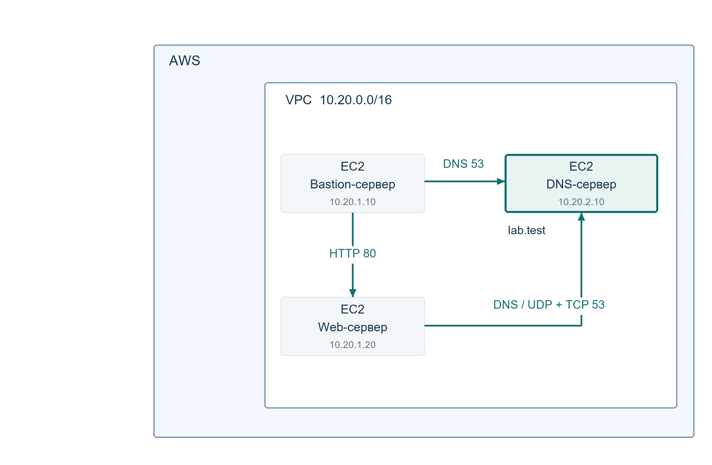

M2 Внутренний DNS и системное разрешение имён (13)
Практика P0–P6 · Задания M0–M5
Связанное задание: P2.
Требуемый результат
Перед началом убедитесь на странице оценок, что за M1 получен полный балл.
Добавьте шесть имён из таблицы во внутренний DNS, настроенный в P2. С бастиона должен открываться адрес http://web.lab.test/mission.txt.
- DNS-сервер (P2.2-P2.4). Добавьте A-записи в существующую зону
lab.test. Увеличьте серийный номер зоны, проверьте синтаксис и перечитайте настройки. Имена из P2 можно сохранить. - Бастион и Web-сервер (P2.5-P2.8). Проверьте прямой запрос к внутреннему DNS и обычное разрешение имён ОС. На бастионе откройте текст M1 по имени
web.lab.test. На Web проверьте, чтоdb.lab.testразрешается в10.20.2.20.
Схема задания

| DNS name | A / IPv4 |
|---|---|
| admin.lab.test | 10.20.1.20 |
| bastion.lab.test | 10.20.1.10 |
| db.lab.test | 10.20.2.20 |
| dns.lab.test | 10.20.2.10 |
| repo.lab.test | 10.20.2.30 |
| web.lab.test | 10.20.1.20 |
Критерии оценки
Каждый критерий даёт 1 балл.
| № | Условие |
|---|---|
| 1 | BIND/named работает (active). |
| 2 | Проверки named и zone lab.test завершаются успешно. |
| 3 | SOA/NS zone lab.test и авторитетный ответ соответствуют схеме; NS - dns.lab.test. |
| 4 | Все заданные A-записи profile дают нужные private IP; это один пункт. |
| 5 | И бастион, и Web получают правильные ответы по UDP 53. |
| 6 | И бастион, и Web получают правильные ответы по TCP 53. |
| 7 | Обычный resolver бастиона/Web использует только BIND; нет подмены hosts или Firefox DoH. |
| 8 | С бастиона HTTP по имени profile и заданному пути возвращает 200 и правильный текст. |
| 9 | Обычный resolver Web разрешает имя DB profile в 10.20.2.20. |
| 10 | Forward only направлен только на 10.20.0.2; внешнее DNS-имя разрешается. Внешний HTTP не нужен. |
| 11 | Новое отсутствующее имя этого запуска получает авторитетный NXDOMAIN. |
| 12 | Query/recursion/cache разрешены только localhost, бастиону и Web в BIND; одного SG недостаточно. |
| 13 | AXFR с бастиона/Web явно отклоняется при успешных обычных запросах того же запуска; таймаут не подходит. |
Проверка и отправка
- Откройте страницу оценок и выберите M2.
- Запустите проверку выбранного задания.
- По завершении появятся число выполненных критериев и результат каждого. Исправьте пункты с пометкой «Исправить» и запустите проверку снова. «Не проверен» означает, что результат определить не удалось. Баллы отображаются в списке заданий.